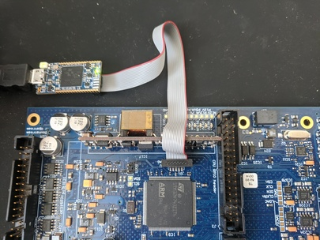

Table of Contents
Setup
The Stabilizer firmware consists of different applications tailored to different use cases. Only one application can run on the device at a given time. After receiving the Stabilizer hardware, you will need to choose, build, and flash one of the applications onto the device.
Power
Power Stabilizer through exactly one of the following mechanisms.
- Via the backside 12V barrel connector
- Via Power-over-Ethernet using a PoE capable switch (802.3af or preferrably 802.3at) and the RJ45 front panel port
- Via an EEM connection to Kasli
Note: Applying power through more than one mechanism may lead to damage. Ensure the two unused methods are not connected or explicitly disabled.
Network and DHCP
Stabilizer supports 10Base-T or 100Base-T with Auto MDI-X.
Stabilizer uses DHCP to obtain its network configuration information. Ensure there is a
properly configured DHCP server running on the network segment that Stabilizer is
connected to.
Alternatively, a static IP can be enforced in the firmware build command by specifying
the environmental variable STATIC_IP analogous to how a specific broker IP is set.
Note: If Stabilizer is connected directly to an Ubuntu system (for example using a USB-Ethernet dongle) you can set the IPv4 settings of this Ethernet connection in the Ubuntu network settings to "Shared to other computers". This will start and configure a DHCP server for this connection.
MQTT Broker
Stabilizer requires an MQTT broker that supports MQTTv5. The MQTT broker is used to distribute and exchange elemetry data and to view/change application settings. The broker must be reachable by both the host-side applications used to interact with the application on Stabilizer and by the application running on Stabilizer. Determine the IPv4 address of the broker as seen from the network Stabilizer is connected to. The broker IP address must be stable. It will be used later during firmware build. The broker must be reachable on port 1883 on that IP address. Firewalls between Stabilizer and the broker may need to be configured to allow connections from Stabilizer to that port and IP address.
Mosquitto has been used as a MQTT broker during development, but any MQTTv5 broker without authentication or encryption will likely work.
Note: Mosquitto version 1 only supports MQTTv3.1. If using Mosquitto, ensure version 2.0.0 or later is used.
We recommend running Mosquitto through Docker to easily run it on
Windows, Linux, and OSX. After docker has been installed, run the following command from
the stabilizer repository to create a container named mosquitto that can be stopped
and started easily via docker:
# Bash
docker run -p 1883:1883 --name mosquitto -v `pwd`/mosquitto.conf:/mosquitto/config/mosquitto.conf -v /mosquitto/data -v /mosquitto/log eclipse-mosquitto:2
# Powershell
docker run -p 1883:1883 --name mosquitto -v ${pwd}/mosquitto.conf:/mosquitto/config/mosquitto.conf -v /mosquitto/data -v /mosquitto/log eclipse-mosquitto:2
Building
- Get and install rustup and use it to install a current stable Rust toolchain. The minimum supported Rust version (MSRV) is 1.57.0 (2021 edition).
- Install target support
rustup target add thumbv7em-none-eabihf - Install cargo-binutils
cargo install cargo-binutils rustup component add llvm-tools-preview - Clone or download the firmware
git clone https://github.com/quartiq/stabilizer cd stabilizer - Build firmware specifying the MQTT broker IP. Replace
10.34.16.10by the stable and reachable broker IPv4 address determined above.# Bash BROKER="10.34.16.10" cargo build --release # Powershell # Note: This sets the broker for all future builds as well. $env:BROKER='10.34.16.10'; cargo build --release - Extract the application binary (substitute
dual-iirbelow with the desired application name)# Bash BROKER="10.34.16.10" cargo objcopy --release --bin dual-iir -- -O binary dual-iir.bin # Powershell $env:BROKER='10.34.16.10'; cargo objcopy --release --bin dual-iir -- -O binary dual-iir.bin
Flashing
Firmware can be loaded onto stabilizer using one of the three following methods.
Note: All methods require access to the circuit board. Pulling the device from a crate always requires power removal as there are sensitive leads and components on both sides of the board that may come into contact with adjacent front panels. Every access to the board also requires proper ESD precautions. Never hot-plug the device or the probe.
ST-Link virtual mass storage
If a ST-Link V2-1 or later is available this method can be used.
Power down the device, remove it from the crate, and connect the SWD/JTAG probe as shown below to the device and to your computer.

Power up the device and copy dual-iir.bin onto the virtual mass storage ST-Link drive
that has appeared on your computer.
Power down the device before removing the probe, inserting it into the crate
and applying power again.
DFU Upload
If an SWD/JTAG probe is not available, you can flash firmware using only a micro USB cable plugged in to the front of Stabilizer, a DFU utility, and a jumper to activate the bootloader.
- Install the DFU USB tool
dfu-util - Remove power
- Then carefully remove the module from the crate to gain access to the board
- Short JC2/BOOT with the jumper
- Connect your computer to the Micro USB connector below/left of the RJ45 connector on the front panel
- Insert the module into the crate
- Then power it
- Perform the Device Firmware Upgrade (DFU)
dfu-util -a 0 -s 0x08000000:leave -D dual-iir.bin - To keep the device from entering the bootloader remove power, pull the board from the crate, remove the JC2/BOOT jumper, insert the module into the crate, and power it again
SWD/JTAG Firmware Development
To observe logging messages or to develop and debug applications a SWD/JTAG
probe is required. To use a compatible probe with probe-run connect it as
described above.
- Install
probe-runcargo install probe-run - Build and run firmware on the device
# Bash BROKER="10.34.16.10" cargo run --release --bin dual-iir # Powershell $Env:BROKER='10.34.16.10'; cargo run --release --bin dual-iir
When using debug (non --release) mode, decrease the sampling frequency significantly.
The added error checking code and missing optimizations may lead to the application
missing timer deadlines and panicing.
Verify MQTT connection
Once your MQTT broker and Stabilizer are both running, verify that the application connects to the broker.
A Stabilizer application on a device is reporting its status on the following topic
dt/sinara/dual-iir/+/alive
The + is a wildcard matching the unique MAC address of the device (e.g. aa-bb-cc-00-11-22).
Download MQTT-Explorer to observe which topics have been posted to the Broker.

Note: In MQTT explorer, use the same broker address that you used when building the firmware.
In addition to the alive status, telemetry messages are published at regular intervals
when Stabilizer has connected to the broker. Once you observe incoming telemetry,
Stabilizer is operational.